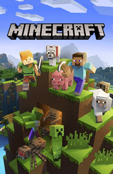

Spiele
Hier werde ich meine Favariten Spiele aufzählen und erzählen.
Call of duty Black ops 1-4:
Call of duty Black ops sind meine Liebling Call of duty Reihe. Das erste Call of duty das ich gespielt habe war Call of duty 2.Ich und meine bester Kolleg Shafwan haben immer zusammen dieses Spiel gespielt. Damals hatte er nur diese Spiel und jede
Samstag bin ich zur ihm zuhause gegangen und haben den Spielmodus Zombies gespielt. Diese Spielmodus hat diese Spiel
sehr legendär gemacht. Danach hat sich noch Shafwan BO1 (Black Ops 1) gekauft und das haben wir auch durchgespielt.
Als der Xbox One und PS4 neu auf den Markt kamen. Kam auch BO3 raus. Diesmal hab ich diesen Spiel auf dem PS4 gekauft.
Shafwan hat es auch gekaut, aber noch auf dem alten Konsole. Ich habe fast jede freie Minute gespielt, bis meine Noten
schlechter wurden und meine Eltern meine Konsole weggenommen haben. BO4 habe ich nur einmal bei Shafwan gespielt.
Leider war es nicht so gut wie die alten.
Minecraft
Minecraft ist ein Spiel, welches zeitlos ist. Als ich 12 war habe ich zum ersten mal Minecraft gespielt und es hatmich fasziniert. Man konnte alles Mögliche bauen und mit Freunde Spielen. In dieses Spiel habe ich die meisten
Stunden meiner Freizeit verbracht. Damals mit meine alten Freunden habe ich vieles erlebt...
Leider haben sich die Zeiten geandert und jeder geht seinem Weg nach. 
GTA V
Dieses Spiel durfte ich eigentlich nie gespielt haben, weil es ab 18 ist. Aber damals konnte ich noch meine Elternüberzeugen und bin gluchlich darüber, dass sie es mir erlaubt haben. Auf diesem Spiel hatte man viele Moglichkeiten.
Es gab nicht viele Regeln und man konnte alles machen, was man wollte. GTA V online ist einer der besten Mehrspieler
Spiel. Man konnte auf einen Server diverse Dinge machen. Wie z.B. Rennen fahren,Raububerfälle, Verfolgungsjagden u.s.w.
Ich freue mich schon auf GTA 6.

Far Cry 3-5
Far Cry ist eine Open World Game mit spannenden Geschichten. Es gibt in diesem Spiel Hauptmissionen, Nebenmissionen und Feindliche Stutzpunkte.Bei jedem Teil musste man meist eine Bösewicht vernichten und Stutzpunkte erobern.